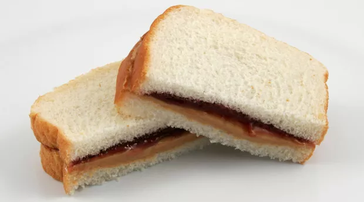

Peanut Butter and Jelly Sandwich

A classic quick and easy recipe that most love and enjoy!
The classic PB&J is a crowd favorite among children and adults everywhere. It's cheap, easy to make, and delicious! Hard to go wrong with this one!
Ingredients
- Bread of Choice: White, wheat, rye? Sky's the limit!
- Peanut Butter
- Jelly of Choice: Grape is a crowd favorite!
Steps
- Take out 2 slices of bread, preferrably from the center unless you're a psycho.
- Cover a side of slice #1 with peanut butter.
- Cover a side of slice #2 with jelly.
- Slap the bread together so that the peanut butter kisses the jelly and BABOOM! You have yourself a PB&J!
RETURN HOME